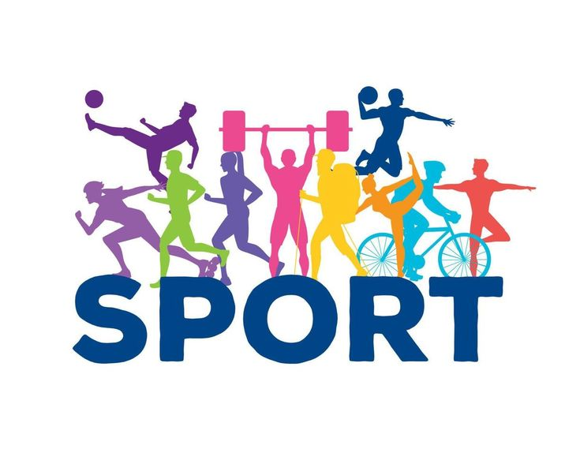

Seberapa Pentingnya Olahraga Untuk kita
Olahraga
Olahraga merupakan aktivitas gerak manusia menurut teknik tertentu, dalam pelaksanaannya terdapat unsur bermain, ada rasa senang, dilakukan pada waktu luang, dan kepuasan tersendiri. Manusia sendiri adalah mahkluk hidup yang aktivitasnya sangat tinggi. Rutinitas yang sangat tinggi tersebut harus ditunjang dengan kondisi psikologis dan fisik tubuh yang seimbang. Keseimbangan kondisi fisik dan psikologis tersebut dapat dicapai dengan usaha manusia melalui aktivitas olahraga dan rekreasi yang bertujuan mengurangi tegangan-tegangan pada pikiran (refreshing dan relaksasi). Olahraga pada hakikatnya adalah proses pendidikan yang memanfaatkan aktivitas fisik untuk menghasilkan perubahan holistik dalam kualitas individu, baik dalam hal fisik, mental, serta emosional. Olahraga memperlakukan seseorang sebagai sebuah kesatuan utuh, mahluk total, daripada hanya menganggapnya sebagai seseorang yang terpisah kualitas fisik dan mentalnya.Pada kenyataannya, olahraga merupakan suatu bidang kajian yang luas sekali. Titik perhatiannya adalah peningkatan gerak manusia. Lebih khusus lagi, olahraga berkaitan dengan hubungan antara gerak manusia, yang terhubung dengan perkembangan tubuh-fisik dengan pikiran dan jiwanya. Fokusnya pada pengaruh perkembangan fisik terhadap wilayah pertumbuhan dan perkembangan aspek lain dari manusia itulah yang menjadikannya unik. Tidak ada bidang tunggal lainnya seperti olahraga yang berkepentingan dengan perkembangan total manusia. Olahraga adalah pendidikan jasmani yang terdapat dalam permainan dalam rangka memperoleh rekreasi, kemenangan dan prestasi yang tinggi. Per definisi, olahraga diartikan dengan berbagai ungkapan dan kalimat. Namun esensinya sama, yang jika disimpulkan bermakna jelas, bahwa olahraga memanfaatkan alat fisik untuk mengembangan keutuhan